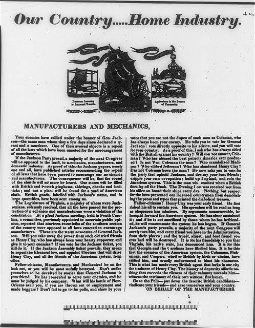

| Field | Detail |
| TOC Fit | Chapter 8 · Essay prompt 8.2 (Who Built the Infrastructure?); Essay prompt 9.2 (An Era of Good Feelings?); Essay prompt 9.5 (Why Jackson Won in 1828) |
| Why Here | A pro-Adams, pro-Clay broadside warns factory workers and mechanics that a Jackson victory would repeal the protective tariff and flood stores with British cloth. Students can weigh how supporters of the American System tied tariffs and federal economic policy to workers’ jobs, and how campaign printers turned economic policy into partisan appeals. |
| Treatment | Public-domain image; printed title and mottoes transcribed; letterpress text to be read from the image |
Henry Clay’s “American System” combined a protective tariff for manufacturers, a national bank, and federally funded roads and canals. Its supporters argued that tariffs created a home market for farmers by building up factories, while southern planters and many Jacksonians attacked protection as a tax on consumers and, by the late 1820s, as unconstitutional. This broadside, addressed to “Manufacturers and Mechanics,” pairs three woodcut vignettes (a weaver at a loom, a merchant ship named for John Quincy Adams, and a farmer plowing beneath a liberty pole) with a long letterpress appeal attacking Andrew Jackson’s supporters as enemies of the tariff and friends of British interests. The Library of Congress and the standard catalog of American political prints date it to the 1824 election, but its text refers to events of 1827, which suggests it was issued for the Adams–Jackson contest of 1828. Editorial note. The Norton Source Collection prints a transcription of the broadside’s letterpress text and credits the Library of Congress copy (LCCN 2008661727). This reader reproduces the broadside as an image from the Library of Congress’s public-domain scan; the lines above are only the title and the mottoes on the woodcuts, as recorded in the Library’s catalog description. The full letterpress text (beginning “MANUFACTURERS AND MECHANICS, Your enemies have rallied under the banner of Gen. Jackson” and ending “ON BEHALF OF THE MANUFACTURERS”) can be read in the image below and, more clearly, on the Library of Congress’s high-resolution scan (https://www.loc.gov/item/2008661727/). CAUTION ON DATE: the Library and Bernard F. Reilly’s American Political Prints (entry 1824-3) date the broadside 1824, but the text cites the Virginia legislature’s resolution that protective laws were unconstitutional, South Carolina anti-tariff meetings, and “their own witness, Buchanan” (James Buchanan’s 1827 statement in the “corrupt bargain” controversy), all from 1827. Treat it as campaign propaganda with an uncertain date. |
|
 |
|
UNIT 3 · AN EXPANDING NATION | HISTORY B17A | DANIEL GARZA, M.A.
|